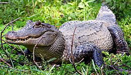
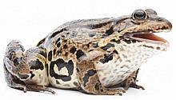
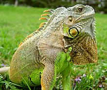
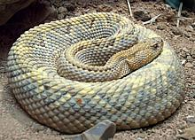
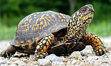
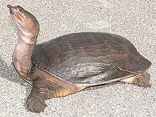
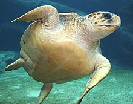

SAFARI
Users
Fish in shallow waters learned to breath air as a matter of survival. A variety of lobe finned fish took a liking to land (plenty of big bugs to eat and no sharks) and evolved into a "Tetrapod Amphibian", This chart shows its descendants (for simplicity extinct (thus inedible) and minor lines and some intermediate phases have been omitted).
- Synapsids (mammal-like reptiles)
- Mammals (that's us)
- Amphibians (Salamanders, Frogs)
- Anapsids - Turtles
- Diapsids
- Lizards and Snakes (Lepidosaurs)
- Archosaurs
- Birds (and all other Dinosaurs)
- Crocodiles & Alligators and Caymans and Gharials
Varieties
Alligator
 [American Alligator Alligator mississippiensis, Chinese Alligator Alligator sinensis]
Alligators are now known not to be reptiles but related to birds through a common dinosaur ancestor. American alligators are found in the southeast of the U.S. from North Carolina down and around Florida to the coastal areas of Texas but most live in Florida and Louisiana. The largest alligator on record was over 19 feet but they are commonly around 8 feet.
While the American Alligator is doing well and is also extensively
farmed, the Chinese alligator lives only along the Yangtze River and is
endangered. In the U.S. alligator has been harvested primarily for hides
but the meat is becoming increasingly popular.
Details and Cooking
Photo © i0102
Frog
 [family Ranidae (true frogs) mostly genus Rana (over 230 species)]
While one species of frog (Conraua goliath) can grow to 7 pounds, the edible frogs of commerce are generally less than 1 pound. While frog eating is commonly associated with France (due to horrified Englishmen), they are much more commonly eaten in the U.S. South and Midwest, the Caribbean, China and Southeast Asia. In most cases only the hind legs are eaten though in some areas for some species the back is also used.
Frozen frog legs from China and Vietnam are now common in U.S.
markets serving local Asian communities. In Europe the most eaten frog
is the Edible Frog (Rana kl. esculenta). In the U.S. the most
eaten frog is the American Bull Frog (Rana catesbeiana), a very
large frog that can grow to 1.5 pounds and is farmed in some areas.
Details and Cooking
Photo © i0046
Iguana
 [Green Iguana Iguana iguana]
The Green Iguana is native to Central and South America and the Caribbean Islands and grows to 6 feet long and over 10 pounds. Iguanas hatched in captivity make good pets if given proper care and feeding which may not be easy in non-tropical locations. Wild iguanas seldom survive in captivity.
While green iguanas are eaten in Central and South America they
are CITES (Convention on International Trade in Endangered Species)
listed as Appendix II "threatened" so I don't recommend eating them.
They should also not be purchased as pets unless their fairly demanding
care and feeding needs can be met - for a period of 20 years or more.
Details and Cooking.
Photo © i0101.
Rattlesnake
 [genus Crotalus, (27 species), also genus Sistrurus (3 species)]
Rattlesnakes are native to North and South America and are among the most
venomous snakes in the world. Some species can grow to more than 8 feet long
but the famous Western Diamondback rarely exceeds 6 feet. Rattlesnakes figure
in the cuisines of the U.S. Southwest and Mexico and are available from
specialty meat stores. The flavor is similar to a free range chicken thigh
but chewier.
Details and Cooking
Photo © i0103
Turtles
 [order Testudines, family Geoemydidae (Asian river turtles, Asian box turtles), family Trionychidae (softshell turtles), family Emydidae (American box and pond turtles), family Chelydridae (snapping turtles)]
The first known turtle is from the early Triassic, more than 240 million years ago and long before modern lizards and snakes appeared, but it was so well developed there were probably turtles long before that. Originally land animals, a fair number of species took up life in the water and some even became sea creatures, but they still need to come onto land to lay their eggs.
Turtles are traditionally grouped with the Anapsid reptiles but
some paleontologists now believe their anapsid style skull was a reversion
from a Diapsid form which would make Anapsids totally
extinct.
Photo © i0104
Box Turtles [Family Emydidae Common Box Turtle, Terrapene carolina
| Asian box turtles, family Geoemydidae]
[Family Emydidae Common Box Turtle, Terrapene carolina
| Asian box turtles, family Geoemydidae]
The Chinese, having eaten their own box turtles to the verge of
extinction are now determined to do the same to ours. At least one
Asian market in Los Angeles has these for sale live as "hard shell
turtle".
Details and Cooking
Photo by US National Parks Service = public domain
Softshell Turtles [family Trionychidae; Florida Soft Shell Turtle, Apalone ferox]
The Chinese, having eaten their own soft shell turtles to the verge of
extinction are now determined to do the same to ours. At least one
Asian market in Los Angeles has these for sale live as "soft shell
turtle".
Details and Cooking.
Photo by Jonskate17 distributed under license Creative
Commons
Attribution-Share Alike 3.0 Unported.
Sea Turtles [family Cheloniidae (5 species) | family Dermochelyidae (one species, leatherbacks Dermochelys coriacea)] Sea turtles are land reptiles that have returned to the sea, but adult females travel to the sandy beach where they hatched to lay their eggs above the high tide mark. This is often a trip of thousands of miles from the foraging grounds. Baby turtles, after hatching, head immediately for the sea, but are extremely vulnerable to predation by land animals. Once in the sea they are extremely vulnerable to predation by sharks. Those that make it through this experience (about 1%) may live long lives if not accidently caught and drowned by fishing gear. All sea turtles are Internationally listed as "Endangered" or
"Threatened" and protected by national laws and international
treaties. They should not be disturbed, captured or eaten, nor should
their nests and eggs be disturbed. All sea turtles in U.S. waters are
protected by the Endangered Species Act which establishes substantial
penalties for placing them at risk.
Details and Cooking
Photo © i0105
|